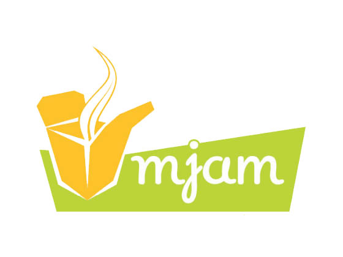
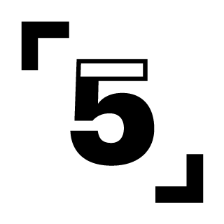

Hello Linz!
Rails Girls Linz took place June 13 - 14, 2014. Pictures were taken. Fun was had. Go check for yourself on Flickr!
You learn designing, prototyping and coding with the help from our coaches.
You need your own laptop, curiosity and a sprinkle of imagination!
Want to help? We are looking for sponsors! Shoot us a mail.
| 18.00 - 20:00 |
Installation partyCome get Rails installed by our bunch of pro’s, along with a funky looking terminal, easy-to-use texteditor and more. There’ll be pizza. And drinks.Sponsors, boyfriends, girlfriends and developers that happen-to-be-in-the-neighborhood are more than welcome to join. |
|---|
| 09:30 - 10:30 |
Registration |
|---|---|
| 10:00 - 10:30 |
Breakfast! |
| 10:30 - 11:00 |
BentoboxWe will teach you some 'tech talk', using the Bentobox exercise - led by Sebastian. |
| 11:00 - 13:00 |
Hands-on, minds-on learning!Rails Girls workshop includes learning the first steps into software craftmanship, creating a fun app, in small teams. |
| 13:00 - 14:00 |
Lunch! |
| 14:00 - 15:00 |
Lightning talks!Nicolas Dular - How to impress your friends with nerdy terminal stuff [beside green colored font]Laura Gaetano - Git it?! (on git and GitHub) Nadja Lederer - The essence of coding (featuring turtles) Martin Schürrer - Software Eats the World and What That Means For You Floor Drees - Rails Girls Summer of Code |
| 15:00 - 16:30 |
Second part of the workshop |
| 16:30 |
Wrap-upLaura Gaetano will tell you how to go from there (because she's nice like that). |
Location:
Axis Linz - Coworking Loft
Peter-Behrens-Platz 2
4020 Linz
Applications open: May 1st
Applications close: June 1st (attendees have been informed)
AXIS Linz is a unique office infrastructure in one of the most intersting Places in Linz: the former Tabacofactory
 Lingohub is a localization platform that makes translating your web or mobile apps a hassle-free experience. Drive up your productivity and cut overhead with API access, a CLI client, Bitbucket support or an industry-leading two-way Github sync. Go global, be local!
Lingohub is a localization platform that makes translating your web or mobile apps a hassle-free experience. Drive up your productivity and cut overhead with API access, a CLI client, Bitbucket support or an industry-leading two-way Github sync. Go global, be local!
 With Mjam.net you can quickly and easily order food online Simply type in your zip code, choose a restaurant, put together your desired menu and order. Whether it’s pizza, burgers, sushi, Thai or Indian - on mjam.at you can choose your favorite delivery service from over 690 restaurants. Enjoy your meal!
 Github is version control for software development and so much more. Whether it's a weekend side project, your favorite open source library, a startup destined for glory, or your company's app, GitHub helps everyone work together with tools for easier collaboration and more visibility. Check it out — open source is free!
Github is version control for software development and so much more. Whether it's a weekend side project, your favorite open source library, a startup destined for glory, or your company's app, GitHub helps everyone work together with tools for easier collaboration and more visibility. Check it out — open source is free!
Codeship. Hosted continuous integration and deployment for everyone. The Codeship runs your hosted tests and automated deployments. Built for the cloud.
Founded in 2009, Runtastic has rapidly grown into an innovative suite of apps, products and services that track and manage health and fitness data to motivate individuals to get in shape, stay healthy and improve overall fitness.
 Sektor5 is more than just a coworking space - they are a community of entrepreneurs. You should swing by, next time you're in Vienna!
 Wooga is one of the most popular social games developers for Facebook and mobile in the world. The company is based in Berlin, Europe's creative heart and mecca for tech industry innovators. Wooga's free-to-play games are enjoyed by around 50 million players per month.
Wooga is one of the most popular social games developers for Facebook and mobile in the world. The company is based in Berlin, Europe's creative heart and mecca for tech industry innovators. Wooga's free-to-play games are enjoyed by around 50 million players per month.